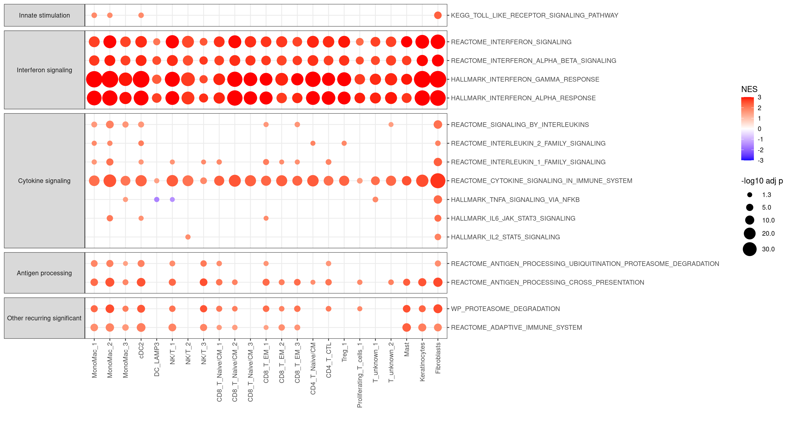

# Load libraries
library(ggplot2)
library(Seurat)
library(tidyverse)
library(msigdbr)
library(fgsea)
library(GSEAtraining) # This is used because KEGG_MEDICUS isn't yet available in msigdbr11 Skin: Calculating Post vs Pre 3rd vaccination differences in pathway enrichments with fgsea
11.1 Set up Seurat workspace
11.2 Read in pseudobulk DE test results
skin_de <- read_tsv("Skin_scRNA_PostVsPre3rd_DiffExp_results.tsv")Rows: 125307 Columns: 11
── Column specification ────────────────────────────────────────────────────────
Delimiter: "\t"
chr (4): sub.cluster, gene, cluster_id, contrast
dbl (7): baseMean, logFC, lfcSE, stat, p_val, p_adj.loc, p_adj.glb
ℹ Use `spec()` to retrieve the full column specification for this data.
ℹ Specify the column types or set `show_col_types = FALSE` to quiet this message.skin_de# A tibble: 125,307 × 11
sub.cluster gene cluster_id baseMean logFC lfcSE stat p_val p_adj.loc
<chr> <chr> <chr> <dbl> <dbl> <dbl> <dbl> <dbl> <dbl>
1 0 7SK 0 166. -2.09 0.470 -4.44 9.12e-6 0.000168
2 0 A2M 0 84.8 -3.11 1.07 -2.90 3.75e-3 0.0215
3 0 AAGAB 0 21.1 0.113 0.282 0.400 6.89e-1 0.817
4 0 AAK1 0 105. -0.111 0.154 -0.724 4.69e-1 0.650
5 0 AAMDC 0 22.9 0.303 0.280 1.08 2.79e-1 0.471
6 0 AAMP 0 50.9 0.0513 0.219 0.234 8.15e-1 0.897
7 0 AAR2 0 9.66 0.0439 0.430 0.102 9.19e-1 0.959
8 0 AARS1 0 12.1 -0.160 0.327 -0.489 6.25e-1 0.773
9 0 AASDH… 0 14.8 0.495 0.315 1.57 1.16e-1 0.262
10 0 AATF 0 50.2 0.489 0.233 2.10 3.58e-2 0.116
# ℹ 125,297 more rows
# ℹ 2 more variables: p_adj.glb <dbl>, contrast <chr>11.3 Set cluster annotations
cluster_annot <- c(
"0" = "MonoMac_1",
"1_0" = "CD4_T_Naive/CM",
"1_1" = "CD4_T_CTL",
"2_0" = "CD8_T_EM_1",
"2_1" = "CD8_T_Naive/CM_1",
"2_2" = "CD8_T_EM_2",
"3" = "MonoMac_2",
"4_0" = "CD8_T_Naive/CM_2",
"4_1" = "CD8_T_Naive/CM_3",
"5_0" = "NK/T_1",
"5_1" = "NK/T_2",
"5_2" = "NK_cells",
"6_0" = "T_unknown_1",
"6_1" = "CD8_T_EM_3",
"7" = "cDC2",
"8" = "Keratinocytes",
"9_0" = "Treg_1",
"9_1" = "Treg_2",
"10" = "Fibroblasts",
"11_0" = "T_unknown_2",
"11_1" = "T_unknown_3",
"12" = "MonoMac_3",
"13_0" = "Proliferating_T_cells_1",
"13_1" = "Proliferating_T_cells_2",
"14" = "pDC",
"15" = "DC_LAMP3",
"16" = "Mast",
"17" = "Endothelial",
"18" = "cDC1",
"19_0" = "NK/T_3",
"20" = "Pericytes/smooth_muscle",
"21" = "Basal_1",
"22" = "MonoMac_4",
"23" = "B_cells",
"24" = "Basal_2",
"25" = "Macrophages",
"26" = "Proliferating_cDC2"
)11.4 Set cluster orders for plotting
cluster_order <- c("0","3","12","22","25","14","18","7","26","15","23","5_2","5_0","5_1","19_0","2_1","4_0","4_1","2_0","2_2","6_1","1_0","1_1","9_0","9_1","13_0","13_1","6_0","11_0","11_1","16","8","10","17","20","21","24")11.5 Split results by cluster, then extract ranks by log2 fold-change Post3rd vs Pre3rd
skin_de_split <- skin_de %>%
group_by(sub.cluster) %>%
group_split()
skin_de_split_ranks <- lapply(skin_de_split,
FUN = function(x) { x %>%
dplyr::select(gene,logFC) %>%
dplyr::arrange(logFC) %>%
deframe()
}
)
names(skin_de_split_ranks) <- paste0("Cluster",
sapply(skin_de_split,
FUN = function(x) { x %>%
pull(sub.cluster) %>%
unique()
}
)
)11.6 Prepare gene sets from MSigDB
c2 <- msigdbr::msigdbr(species="Homo sapiens",
category = "C2")
immunesig <- msigdbr::msigdbr(species="Homo sapiens",
category = "C7",
subcategory = "IMMUNESIGDB")
hallmark <- msigdbr::msigdbr(species="Homo sapiens",
category = "H")
# Get updated KEGG MEDICUS collection from GSEAtraining package
km <- get_msigdb(version = "2024.1.Hs",
collection = "c2.cp.kegg_medicus",
gene_id_type = "symbols")
# Combine into named list
pathwaysToTest <- bind_rows(c2, immunesig, hallmark)
pathwaysToTest_split <- pathwaysToTest %>%
dplyr::select(gs_name,human_gene_symbol) %>%
group_by(gs_name) %>%
group_split()
names(pathwaysToTest_split) <- sapply(pathwaysToTest_split,
FUN = function(x) { x %>%
pull(gs_name) %>%
unique()
}
)
pathwaysToTest_split_list <- sapply(pathwaysToTest_split,
simplify = FALSE,
USE.NAMES = TRUE,
FUN = function(x) { x %>%
pull(human_gene_symbol) %>%
unique()
}
)
# Add KEGG MEDICUS to the list
pathwaysToTest_split_list <- c(pathwaysToTest_split_list, km)11.7 Iterate over DE results and run fgsea on each cluster’s ranked gene list
set.seed(123)
fgseaRes <- sapply(skin_de_split_ranks,
simplify = FALSE,
USE.NAMES = TRUE,
FUN = function(x) {
fgsea(pathways = pathwaysToTest_split_list,
stats = x,
minSize = 5, # Note this is the intersection of genes in the ranked list and genes in the pathway
maxSize = 1000,
nproc = 1
)
}
)11.8 Collapse all results into one tibble and filter for significance
Save the filtered output
bind_rows(fgseaRes,.id = "sub.cluster") %>%
as_tibble() %>%
mutate(leadingEdgeGenes = map_chr(leadingEdge, toString)) %>%
dplyr::select(-leadingEdge) %>%
dplyr::filter(padj < 0.05) %>%
dplyr::arrange(sub.cluster,padj,NES) %>%
write_tsv("Skin_scRNA_PostVsPre3rd_DiffExp_fgseaRes_sig.tsv")11.9 Print selection of top-most significant pathways
bind_rows(fgseaRes,.id = "sub.cluster") %>%
as_tibble() %>%
mutate(leadingEdgeGenes = map_chr(leadingEdge, toString)) %>%
dplyr::select(-leadingEdge) %>%
dplyr::filter(padj < 0.05) %>%
dplyr::arrange(sub.cluster,padj,-NES) %>%
group_by(sub.cluster) %>%
slice_head(n = 10) %>%
pull(pathway) %>%
unique() [1] "GSE42724_NAIVE_BCELL_VS_PLASMABLAST_UP"
[2] "GSE13485_DAY3_VS_DAY7_YF17D_VACCINE_PBMC_DN"
[3] "GSE13484_UNSTIM_VS_YF17D_VACCINE_STIM_PBMC_DN"
[4] "GSE13485_CTRL_VS_DAY7_YF17D_VACCINE_PBMC_DN"
[5] "GSE18791_UNSTIM_VS_NEWCATSLE_VIRUS_DC_6H_DN"
[6] "GSE18791_CTRL_VS_NEWCASTLE_VIRUS_DC_8H_DN"
[7] "GSE37533_PPARG1_FOXP3_VS_FOXP3_TRANSDUCED_CD4_TCELL_DN"
[8] "GSE42021_TREG_VS_TCONV_PLN_UP"
[9] "BLANCO_MELO_BRONCHIAL_EPITHELIAL_CELLS_INFLUENZA_A_DEL_NS1_INFECTION_UP"
[10] "GSE2770_TGFB_AND_IL4_ACT_VS_ACT_CD4_TCELL_2H_DN"
[11] "HALLMARK_INTERFERON_GAMMA_RESPONSE"
[12] "GSE37533_PPARG2_FOXP3_VS_FOXP3_TRANSDUCED_CD4_TCELL_DN"
[13] "GSE21546_WT_VS_SAP1A_KO_DP_THYMOCYTES_UP"
[14] "GSE42021_CD24HI_VS_CD24INT_TREG_THYMUS_DN"
[15] "GSE42021_TREG_PLN_VS_TREG_PRECURSORS_THYMUS_DN"
[16] "GSE13485_CTRL_VS_DAY3_YF17D_VACCINE_PBMC_DN"
[17] "GSE42021_TREG_PLN_VS_CD24LO_TREG_THYMUS_DN"
[18] "GSE13485_PRE_VS_POST_YF17D_VACCINATION_PBMC_DN"
[19] "TAKEDA_TARGETS_OF_NUP98_HOXA9_FUSION_3D_UP"
[20] "GSE13485_DAY1_VS_DAY7_YF17D_VACCINE_PBMC_DN"
[21] "GSE21927_SPLEEN_C57BL6_VS_4T1_TUMOR_BALBC_MONOCYTES_DN"
[22] "HECKER_IFNB1_TARGETS"
[23] "REACTOME_EUKARYOTIC_TRANSLATION_ELONGATION"
[24] "KEGG_MEDICUS_REFERENCE_TRANSLATION_INITIATION"
[25] "BILANGES_SERUM_AND_RAPAMYCIN_SENSITIVE_GENES"
[26] "REACTOME_EUKARYOTIC_TRANSLATION_INITIATION"
[27] "KEGG_RIBOSOME"
[28] "GSE42021_TREG_PLN_VS_CD24INT_TREG_THYMUS_DN"
[29] "REACTOME_INTERFERON_SIGNALING"
[30] "GSE21546_ELK1_KO_VS_SAP1A_KO_AND_ELK1_KO_DP_THYMOCYTES_UP"
[31] "WP_CYTOPLASMIC_RIBOSOMAL_PROTEINS"
[32] "REACTOME_SELENOAMINO_ACID_METABOLISM"
[33] "GSE6269_FLU_VS_STREP_PNEUMO_INF_PBMC_UP"
[34] "REACTOME_TRANSLATION"
[35] "BLANCO_MELO_HUMAN_PARAINFLUENZA_VIRUS_3_INFECTION_A594_CELLS_UP"
[36] "REACTOME_SRP_DEPENDENT_COTRANSLATIONAL_PROTEIN_TARGETING_TO_MEMBRANE"
[37] "REACTOME_RRNA_PROCESSING"
[38] "REACTOME_NONSENSE_MEDIATED_DECAY_NMD"
[39] "DACOSTA_UV_RESPONSE_VIA_ERCC3_DN" 11.10 Print selection of recurring top-most significant pathways in multiple clusters
Restrict to HALLMARK, KEGG, WP, or REACTOME pathways seen in the top 100 most significant results in at least 2 clusters
recurring_topSigPathways <- bind_rows(fgseaRes,.id = "sub.cluster") %>%
as_tibble() %>%
mutate(leadingEdgeGenes = map_chr(leadingEdge, toString)) %>%
dplyr::select(-leadingEdge) %>%
dplyr::filter(padj < 0.05 & NES > 0) %>%
dplyr::arrange(sub.cluster,padj) %>%
group_by(sub.cluster) %>%
slice_head(n = 100) %>%
dplyr::select(sub.cluster,pathway,padj,NES) %>%
group_by(pathway) %>%
summarize(n = n()) %>%
dplyr::filter(n>=2) %>%
dplyr::filter(str_detect(pathway,"HALLMARK|WP|KEGG|REACTOME")) %>%
pull(pathway) %>%
unique()
recurring_topSigPathways[1] "HALLMARK_INTERFERON_ALPHA_RESPONSE"
[2] "HALLMARK_INTERFERON_GAMMA_RESPONSE"
[3] "REACTOME_ADAPTIVE_IMMUNE_SYSTEM"
[4] "REACTOME_CYTOKINE_SIGNALING_IN_IMMUNE_SYSTEM"
[5] "REACTOME_INTERFERON_ALPHA_BETA_SIGNALING"
[6] "REACTOME_INTERFERON_SIGNALING"
[7] "WP_PROTEASOME_DEGRADATION" names(recurring_topSigPathways) <- rep("Other recurring significant",length(recurring_topSigPathways))11.12 Plot dot plot of NES and p-value for pathways of interest
bind_rows(fgseaRes,.id = "sub.cluster") %>%
as_tibble() %>%
mutate(leadingEdgeGenes = map_chr(leadingEdge, toString)) %>%
dplyr::select(-leadingEdge) %>%
dplyr::filter(pathway %in% topsigPathways) %>%
left_join(enframe(topsigPathways,name = "PathwayGroup",value = "pathway"),by="pathway") %>%
left_join(enframe(cluster_annot,name = "sub.cluster", value = "Cluster") %>%
mutate(sub.cluster = paste0("Cluster",sub.cluster)),
by = "sub.cluster") %>%
mutate(logP = ifelse(padj < 0.05, -log10(padj), 0)) %>%
ggplot(aes(x = fct_relevel(Cluster,cluster_annot[cluster_order][cluster_annot[cluster_order] %in% Cluster]), y = pathway)) +
geom_point(aes(color = NES, size = logP, alpha = I(ifelse(logP < -log10(0.05), 0, 1)))) +
scale_size_continuous("-log10 adj p", range = c(1, 10), breaks = c(1.3, 5, 10, 20, 30)) +
scale_color_gradient2(low = "blue", mid = "white", high = "red", limits=c(-3,3), midpoint = 0, oob = scales::squish) +
theme_bw() +
facet_grid(fct_relevel(PathwayGroup,
c("Innate stimulation",
"Interferon signaling",
"Cytokine signaling",
"Antigen processing",
"Other recurring significant")
)~.,
scales="free",
switch="y",
space="free") +
scale_y_discrete(position = "right") +
ylab("") +
xlab("") +
theme(axis.text.x = element_text(angle = 90, vjust = 0.5, hjust=1),
strip.text.y.left = element_text(angle = 0))
11.13 Get session info
sessionInfo()R version 4.3.1 (2023-06-16)
Platform: x86_64-pc-linux-gnu (64-bit)
Running under: Rocky Linux 8.10 (Green Obsidian)
Matrix products: default
BLAS/LAPACK: /usr/lib64/libopenblasp-r0.3.15.so; LAPACK version 3.9.0
locale:
[1] LC_CTYPE=en_US.UTF-8 LC_NUMERIC=C
[3] LC_TIME=en_US.UTF-8 LC_COLLATE=en_US.UTF-8
[5] LC_MONETARY=en_US.UTF-8 LC_MESSAGES=en_US.UTF-8
[7] LC_PAPER=en_US.UTF-8 LC_NAME=C
[9] LC_ADDRESS=C LC_TELEPHONE=C
[11] LC_MEASUREMENT=en_US.UTF-8 LC_IDENTIFICATION=C
time zone: America/New_York
tzcode source: system (glibc)
attached base packages:
[1] stats graphics grDevices utils datasets methods base
other attached packages:
[1] GSEAtraining_0.99.1 fgsea_1.26.0 msigdbr_7.5.1
[4] lubridate_1.9.3 forcats_1.0.0 stringr_1.5.1
[7] dplyr_1.1.4 purrr_1.0.2 readr_2.1.5
[10] tidyr_1.3.1 tibble_3.2.1 tidyverse_2.0.0
[13] Seurat_5.1.0 SeuratObject_5.0.2 sp_2.1-3
[16] ggplot2_3.5.1
loaded via a namespace (and not attached):
[1] RColorBrewer_1.1-3 jsonlite_1.8.8 magrittr_2.0.3
[4] spatstat.utils_3.0-4 farver_2.1.1 rmarkdown_2.25
[7] zlibbioc_1.46.0 vctrs_0.6.5 ROCR_1.0-11
[10] memoise_2.0.1 spatstat.explore_3.2-6 RCurl_1.98-1.14
[13] htmltools_0.5.7 sctransform_0.4.1 parallelly_1.37.0
[16] KernSmooth_2.23-22 htmlwidgets_1.6.4 ica_1.0-3
[19] plyr_1.8.9 cachem_1.0.8 plotly_4.10.4
[22] zoo_1.8-12 igraph_2.0.2 mime_0.12
[25] lifecycle_1.0.4 pkgconfig_2.0.3 Matrix_1.6-4
[28] R6_2.5.1 fastmap_1.1.1 GenomeInfoDbData_1.2.10
[31] fitdistrplus_1.1-11 future_1.33.1 shiny_1.8.0
[34] digest_0.6.34 colorspace_2.1-0 S4Vectors_0.38.2
[37] AnnotationDbi_1.64.1 patchwork_1.3.0 tensor_1.5
[40] RSpectra_0.16-1 irlba_2.3.5.1 RSQLite_2.3.5
[43] labeling_0.4.3 progressr_0.14.0 fansi_1.0.6
[46] spatstat.sparse_3.0-3 timechange_0.3.0 httr_1.4.7
[49] polyclip_1.10-6 abind_1.4-5 compiler_4.3.1
[52] bit64_4.0.5 withr_3.0.0 BiocParallel_1.34.2
[55] DBI_1.2.2 fastDummies_1.7.3 MASS_7.3-60.0.1
[58] tools_4.3.1 lmtest_0.9-40 httpuv_1.6.14
[61] future.apply_1.11.1 goftest_1.2-3 glue_1.7.0
[64] nlme_3.1-164 promises_1.2.1 grid_4.3.1
[67] Rtsne_0.17 cluster_2.1.6 reshape2_1.4.4
[70] generics_0.1.3 gtable_0.3.4 spatstat.data_3.0-4
[73] tzdb_0.4.0 data.table_1.15.0 hms_1.1.3
[76] XVector_0.40.0 utf8_1.2.4 BiocGenerics_0.46.0
[79] spatstat.geom_3.2-8 RcppAnnoy_0.0.22 ggrepel_0.9.5
[82] RANN_2.6.1 pillar_1.9.0 vroom_1.6.5
[85] spam_2.10-0 babelgene_22.9 RcppHNSW_0.6.0
[88] later_1.3.2 splines_4.3.1 lattice_0.22-5
[91] bit_4.0.5 survival_3.5-8 deldir_2.0-2
[94] tidyselect_1.2.0 Biostrings_2.68.1 miniUI_0.1.1.1
[97] pbapply_1.7-2 knitr_1.45 gridExtra_2.3
[100] IRanges_2.34.1 scattermore_1.2 stats4_4.3.1
[103] xfun_0.42 Biobase_2.60.0 matrixStats_1.2.0
[106] DT_0.31 stringi_1.8.3 lazyeval_0.2.2
[109] yaml_2.3.8 evaluate_0.23 codetools_0.2-19
[112] cli_3.6.2 uwot_0.1.16 xtable_1.8-4
[115] reticulate_1.35.0 munsell_0.5.0 GenomeInfoDb_1.36.4
[118] Rcpp_1.0.12 globals_0.16.2 spatstat.random_3.2-2
[121] png_0.1-8 parallel_4.3.1 ellipsis_0.3.2
[124] blob_1.2.4 dotCall64_1.1-1 bitops_1.0-7
[127] listenv_0.9.1 viridisLite_0.4.2 scales_1.3.0
[130] ggridges_0.5.6 crayon_1.5.2 leiden_0.4.3.1
[133] rlang_1.1.3 KEGGREST_1.40.1 fastmatch_1.1-4
[136] cowplot_1.1.3